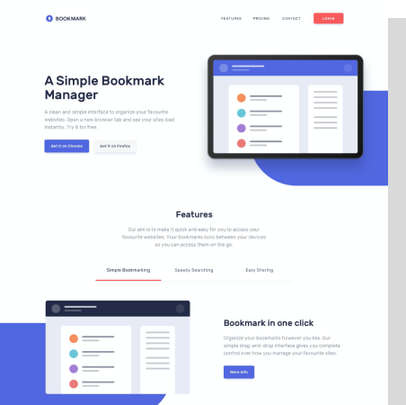
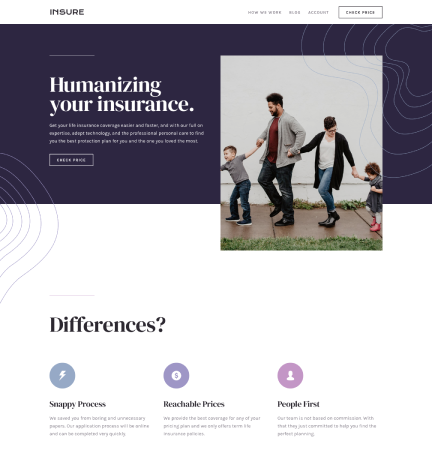

This project required me to build a fully responsive landing page to
the designs provided. I used HTML5, along with CSS Grid and
JavaScript for the areas that required interactivity, such as the
testimonial slider.
Bookmark
This project required me to build a fully responsive landing page to
the designs provided. I used HTML5, along with CSS Grid and
JavaScript for the areas that required interactivity, such as the
features section.


Insure
This was a small project which mostly consisted of HTML and CSS. I
built a fully-responsive landing page. The only JavaScript this
project required was to enable the toggling of the mobile
navigation.
Fylo
This project was built in pure HTML and CSS. I had mobile and
desktop designs to work to and built it so that it was
fully-responsive. I took a mobile-first approach and used modern CSS
like Flexbox and Grid for layout purposes.